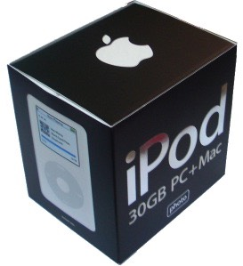
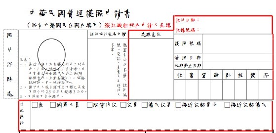

天天都有驚奇，一覺睡醒就下定決心一定要帶睡袋出門！
因為冷氣吹的我好冷，又找不到被子可以蓋。
不禁擔心到要是騎到了阿爾卑斯山的話，該怎麼禦寒呢？
起床不到半小時，就接到送貨員的電話。
我又沒有訂什麼商品，真是太奇怪了 @@"
簽收了一個小小的包裹，搖一搖也沒有聲音，又很輕。
實在猜不出來裡頭是什麼東西∼
解開包裝之後，下巴都快掉下來了 XD
裡頭是一台iPod photo 30G。

好吧，我知道我有下iPod的訂單，但是我還沒有付錢呀 @@"
怎麼東西這麼快就寄來了，有點賺到的感覺 :D
不曉得能不能裝死不要付錢........（這當然是不可能的事情）
家裡iTunes有很多mp3的人們，我會帶著iPod去你那邊抓歌的。
昨天簡單整理了一下收支簿，把手寫的資料改成電子檔。
今天的目標是把60天的行程上線∼
阿彌陀佛，今天蘋果把iPod全系列都改版成彩色螢幕。
也就是iPod = iPod photo，除了本來就沒螢幕的shuffle之外。
早先買黑白螢幕iPod的人，一定覺得粉機車吧∼
無比慶幸自己在最後關頭把iPod 20G改訂為iPod photo 30G。
要是在改款的最後一分鐘，買到舊的產品，我一定會被自己給氣死。
下午去了易遊網門市領取飛往法國的機票。
機票一共有四張，從台北飛曼谷飛巴黎、再倒著飛回來。

接著繞去外交部拿申請護照的表格。
外交部線上的pdf表格，在Mac上看起來中文字支離破碎的可憐。

很努力的裝了一上午的歌，好不容易才裝入5GB∼加油加油！